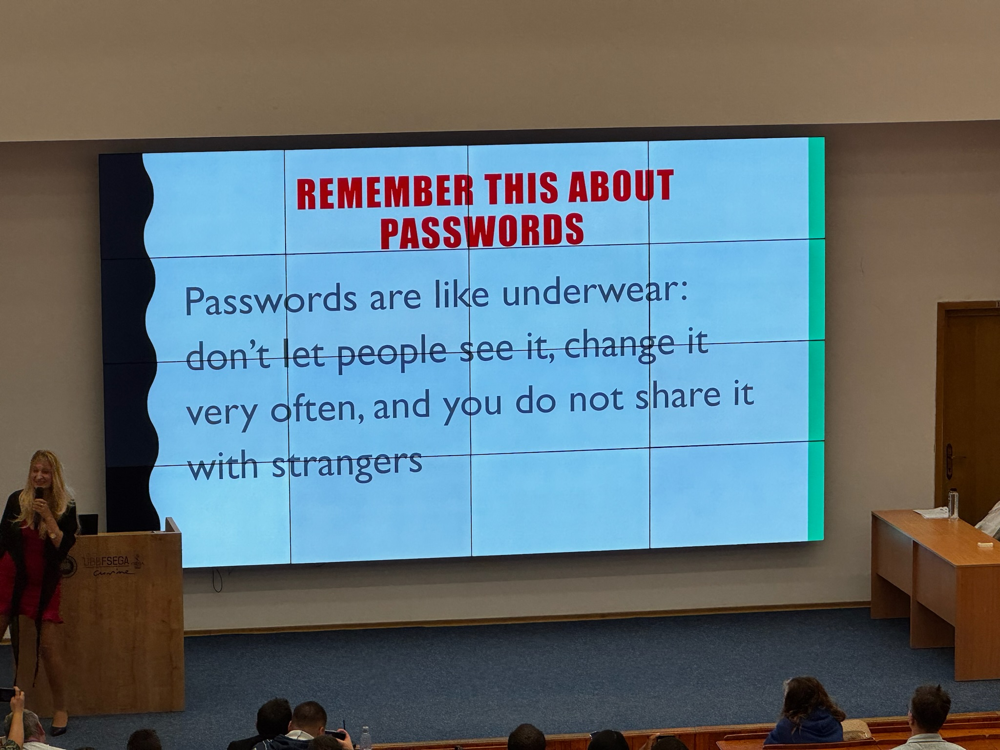
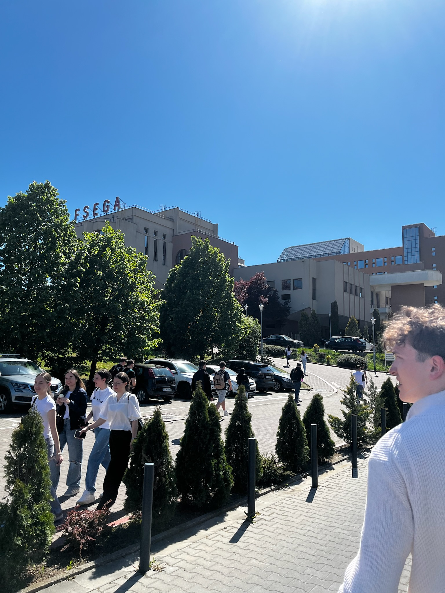
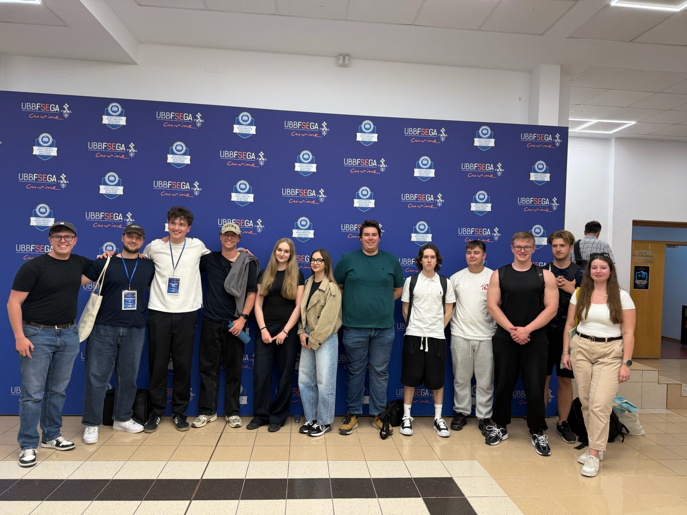

AI in Cybersecurity
A Blended Intensive Programme (BIP) focused on the applications of artificial intelligence in cybersecurity, held in Cluj-Napoca. The program included international collaboration, workshops, and practical activities exploring modern AI-driven security concepts and technologies.
Background
The Blended Intensive Programme (BIP) in Cluj-Napoca focused on the growing impact of artificial intelligence in the field of cybersecurity. The program brought together students and lecturers from multiple countries to explore how AI technologies are transforming both digital security and cyber threats. Through presentations, workshops, and collaborative activities, participants examined modern challenges faced by businesses, organizations, and individuals in an increasingly connected world.
One of the main topics discussed during the programme was the dual role of artificial intelligence in cybersecurity. We explored how AI can improve threat detection, identify malicious files, and strengthen system protection, while also examining how cybercriminals use AI to automate attacks, create phishing campaigns, and target the confidentiality, integrity, and availability of computer systems and data.
The programme also addressed the social and ethical challenges connected to artificial intelligence, including cyberstalking, cyberharassment, cyberbullying, and the spread of online violence through AI-assisted technologies. Additional discussions focused on cybersecurity in business environments, risk management, and the importance of responsible AI development and usage.
The first image shows the certificate of attendance received after completing the Blended Intensive Programme in Cluj-Napoca.
Topics: Artificial Intelligence, Cybersecurity, Threat Detection, Cybercrime, Online Safety
Image Gallery

Lectures content
Faculty where the programme was held
Participants during the BIP programme